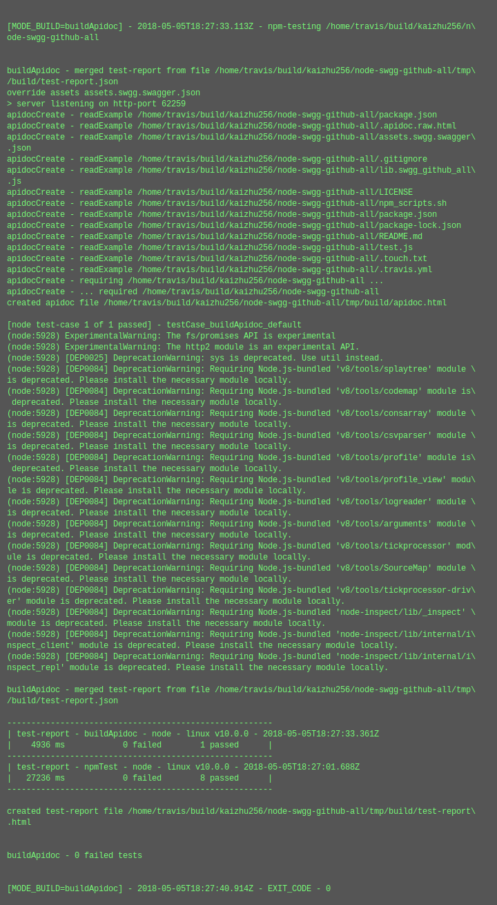
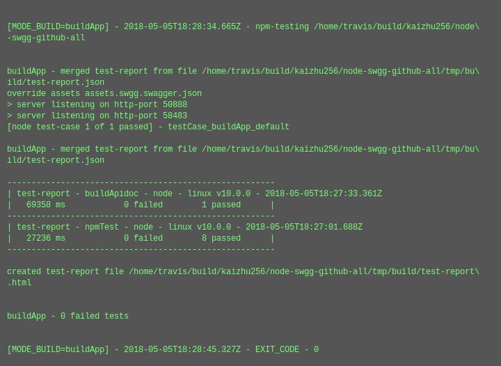

test-report for swgg-github-all (v2018.4.22)
summary
version-
2018.4.22
test date- 2018-04-22T00:39:23.264Z
commit info-
d93e256d23a24d2b2af5f9960fedd2db1848a259 - [build appSwgg] npm_package_swggAll=github-all
| total time-elapsed | total tests failed | total tests passed | total tests pending |
|---|---|---|---|
| 99678 ms | 0 | 17 | 0 |
1. buildApidoc - node - linux v9.11.1 - 2018-04-22T00:39:23.260Z

time-elapsed- 5845 ms
tests failed- 0
tests passed- 1
tests pending- 0
{kind=link}
| # | time-elapsed | status | test-case |
|---|---|---|---|
| 1 | 4626 ms | passed | testCase_buildApidoc_default |
2. buildApp - node - linux v9.11.1 - 2018-04-22T00:37:49.370Z

time-elapsed- 99678 ms
tests failed- 0
tests passed- 8
tests pending- 0
{kind=link}
| # | time-elapsed | status | test-case |
|---|---|---|---|
| 2 | 4563 ms | passed | testCase_buildApidoc_default |
| 3 | 9479 ms | passed | testCase_buildApp_default |
| 4 | 0 ms | passed | testCase_buildCustomOrg_default |
| 5 | 0 ms | passed | testCase_buildLib_default |
| 6 | 1231 ms | passed | testCase_buildReadme_default |
| 7 | 0 ms | passed | testCase_buildTest_default |
| 8 | 0 ms | passed | testCase_nop_default |
| 9 | 17678 ms | passed | testCase_webpage_default |
3. npmTest - browser - /index.default.html - Mozilla/5.0 (X11; Linux x86_64) AppleWebKit/537.36 (KHTML, like Gecko) Chrome/58.0.3029.110 Electron/1.7.13 Safari/537.36 - 2018-04-22T00:39:05.833Z

time-elapsed- 24195 ms
tests failed- 0
tests passed- 8
tests pending- 0
| # | time-elapsed | status | test-case |
|---|---|---|---|
| 10 | 0 ms | passed | testCase_buildApidoc_default |
| 11 | 0 ms | passed | testCase_buildApp_default |
| 12 | 0 ms | passed | testCase_buildCustomOrg_default |
| 13 | 0 ms | passed | testCase_buildLib_default |
| 14 | 4 ms | passed | testCase_buildReadme_default |
| 15 | 0 ms | passed | testCase_buildTest_default |
| 16 | 0 ms | passed | testCase_nop_default |
| 17 | 2 ms | passed | testCase_webpage_default |